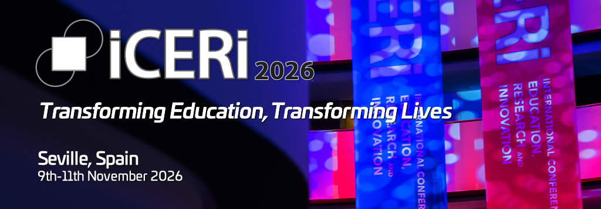

9-11 November 2026
ERNEST: Building a European Ecosystem of Science Escape Rooms for Public Engagement and Scientific Literacy
ERNEST will be presented at ICERI2026 with a talk on how science escape rooms can build a European ecosystem for public engagement, scientific literacy, and dialogue between research and society.
Visit the conference website